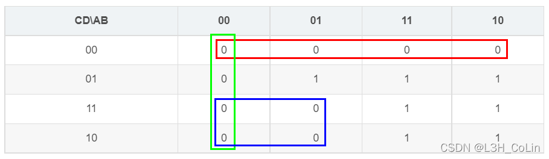
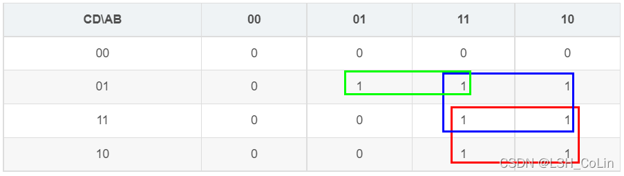

在电路设计中，最直观的方式是与或表达式，但有时这种方式所需的逻辑门电路较多。有时可以对其加以变形。在变形的过程中，通过画出卡诺图能够让我们更加直观地理解其中的变化过程。
- 或与表达式
画出卡诺图，圈出0的部分，直接写出或与表达式。
例1
| CD\AB | 00 | 01 | 11 | 10 |
|---|---|---|---|---|
| 00 | 0 | 0 | 0 | 0 |
| 01 | 0 | 1 | 1 | 1 |
| 11 | 0 | 0 | 1 | 1 |
| 10 | 0 | 0 | 1 | 1 |
Step 1: 画出0部分的划分圈

红圈实际表示的是，在或与表达式中写为
绿圈实际表示的是，在或与表达式中写为
蓝圈实际表示的是，在或与表达式中写为
上述卡诺图对应的或与表达式就为：
- 与非表达式
将与非表达式以电路的形式展现时，电路中只能有与非门这一种门电路。对于每一个与非表达式，其最外面一定是一个非，在非的下面是多个与非表达式的与。这些与非表达式相与的结果应该对应卡诺图中0的部分，也即这里面任何一个与非表达式都应该包含0的所有部分。也即这里面任何一个与非表达式中非下面的部分都不应该包含0的任何部分。这样我们就转化成对1的部分进行分片的操作了。
例2
卡诺图与例1相同，可以将1分为以下3块。

红圈实际表示的是，在与非表达式中写为
绿圈实际表示的是，在与非表达式中写为
蓝圈实际表示的是，在与非表达式中写为
上述卡诺图对应的与非表达式就为：。它实际上可以由与或表达式加两条杠转化而成，因此根据卡诺图求与非表达式实际上就是求与或表达式，非常方便。
如果要求出花费与非门最少的表达式，则需要关注0部分，为0部分画卡诺圈，这些圈都可以作为共同项写入每一个与非项中。如上例中可以写成，这样需要5个与非门，与例2中需要的与非门数量相同。
- 或非表达式
使用与非表达式同样的方法进行分析：或非表达式的总的非下面有很多或非表达式的或，他们的或对应所有0的部分。因此其中每一个或非表达式都不能包含任何1的部分，也即其中每一个或非表达式中非的下面都应该包含所有1的部分。这样看来，或非表达式实际上是或与表达式加两条杠转化而来。
例3
卡诺图与例1相同，划分也与例1相同。
红圈实际表示的是，在或与表达式中写为
绿圈实际表示的是，在或与表达式中写为
蓝圈实际表示的是，在或与表达式中写为
上述卡诺图对应的或非表达式就为：
- 不含反变量的与非表达式
如果与非表达式中可以有反变量，则不会产生嵌套，否则可能需要进行嵌套。
我们直接分析例子，一边分析一边总结规律。
例4
卡诺图同例1。
设表达式为，其中是一系列与非表达式的与。则表示的是图中所有0的部分。所有的与非项都应包含所有0部分。
其中，和仍然可用，这与例2相同，但例2中的不再可用，我们必须将内部的换掉。方法很简单，将改成即可。在具体设计电路的情景下，这里的也可以改成或，看如何修改使逻辑门电路的输出结果得到最大限度的复用。
因此，如果我们想要获得不含反变量的与非表达式，只需要将原来的反变量下添加与其相乘的正变量即可，且是否添加均可选，但不能都不选。
但是不难发现，上述方法产生的表达式至多只有两层嵌套，能否利用多层嵌套实现功能呢？
- 高阶与非表达式探究（慎用！）
对于含有4个变量的形如（3个与非门）的与非表达式（），其需要3个与非门完成，等价于（4个与非门），使用代换规则可以在卡诺图中构造出类似于这样的很多表达式。当四个变量均不相同时，卡诺图中0的个数应为5。从与非表达式转换为与或表达式不如从与或表达式转换为与非表达式有用。如果题中明确采用与非表达式且要求使用的门电路最少，不妨可以考虑这种高阶与非表达式，有利于构造不规则卡诺图形状。观察到其转化后的与非项两项都有，因此反带时可以将非反变量的共同项看成是。但要注意，在和的选择上，有时两项除共同项外无法直接配出这两项，这时不适合使用高阶表达式，直接采用第四点中的表达式即可。